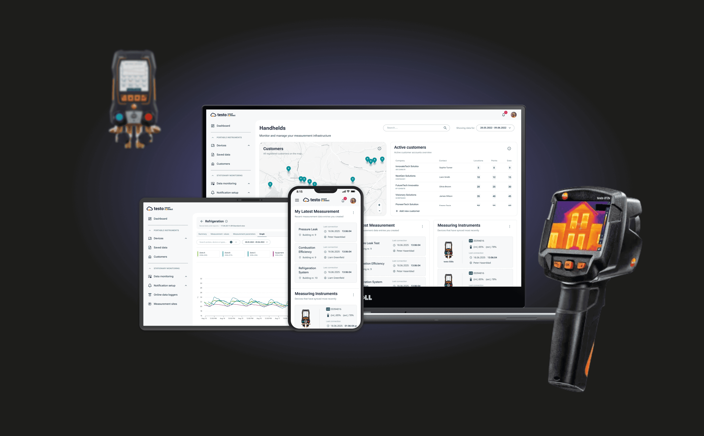
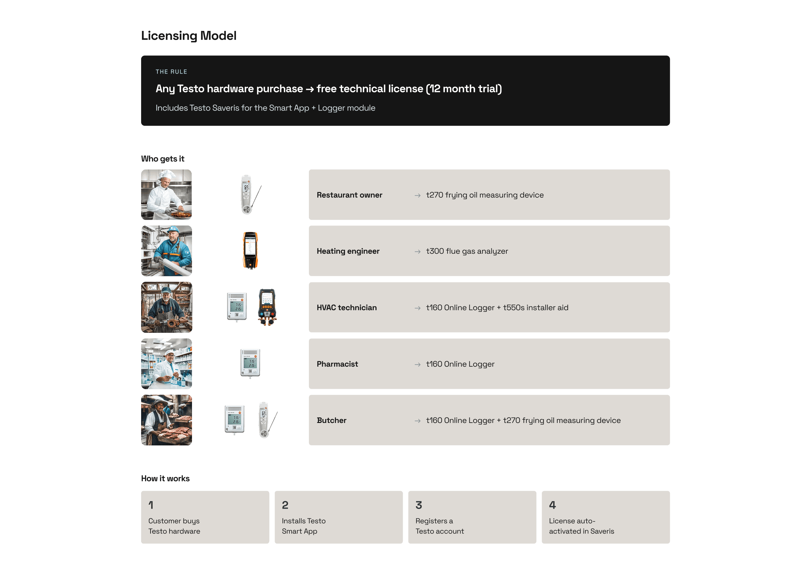
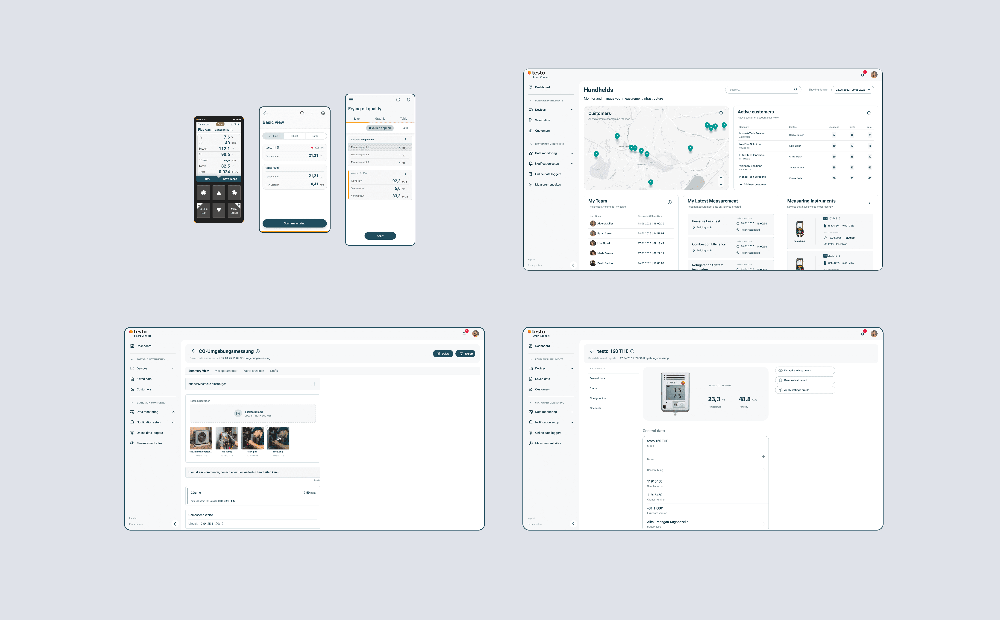
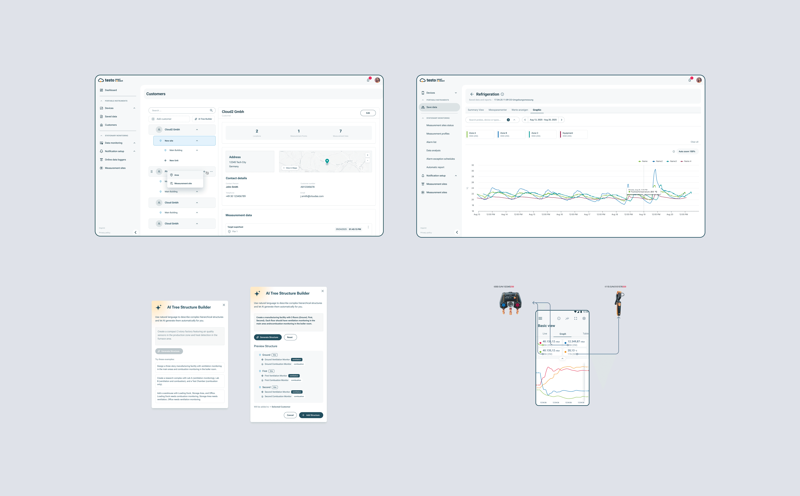

Smart Connect
Winning SMBs in HVAC/R

Every morning, nearly 14,000 HVAC technicians open the Testo Smart App. They measure flue gas emissions, test duct tightness, check oxygen levels — then generate the PDF that proves to their customer the job was done right. That report isn't paperwork. It's their professional reputation. Their customers file it for legal compliance, insurance, and warranty purposes.
Testo — a 466M EUR measurement technology company with 3,900 employees — had this audience locked in on mobile. 220,000 monthly active users. 430,000 registered. 13 million messages processed daily. But every interaction lived on the phone. No web experience. No dashboard. No way to review a full day's work from a laptop.
The enterprise segment was covered by Saveris, Testo's automated monitoring system. But the SMB segment — the independent technicians and small service companies who make up the backbone of HVAC/R — was underserved. Smart Connect was built to change that: a subscription web platform with paid licensing starting January 2027.
This wasn't a product update. It was a new revenue model.
The city under siege and the dragon appears
Inheriting Chaos Before Launch
I joined as lead designer few months before launch. The scene I walked into:
The previous lead designer had left. A new Product Owner was onboarding at the same time. The team needed direction. Requirements were shifting weekly. Stationary monitoring had been designed, but quality had drifted — QA was flagging bugs caused by design inconsistencies. Portable monitoring was barely scoped; the team had been told to "deliver something quickly" against vague requirements.
No core user flows mapped between the Smart App and Smart Connect. Personas existed on paper but weren't used in decisions. The dashboard — the single most important screen after login — didn't exist. And core concepts like "customer" and "measuring place" weren't understood by users (we'd later validate this through research — SUS scores were low).
The business risk was immediate: nearly 14,000 daily users were about to be asked to pay for a product that didn't have a coherent experience. Without a web platform that earned its subscription, Testo would lose the SMB segment it was trying to capture.
I had no map. I needed to draw one.
Understanding the threat
Rather than inheriting old assumptions, I led a 6-week research sprint with the new PO. We interviewed 15 field technicians and service managers across the SMB spectrum. Three pain points kept surfacing — each one a direct threat to the licensing conversion:
Data fragmentation. Technicians' measurement data was scattered across handheld devices, the Smart App, screenshots, and emails. No single source of truth. Piecing together a day's work meant jumping between instruments, phone screens, and message threads. If the web platform didn't unify this, there was no reason to pay for it.
Data trapped on devices. The Smart App already generated PDF reports on-site — technicians could deliver proof of service before leaving the field. But that data lived only on their phone. No way to access it from a laptop, no way to share it with a team, no way to review it from home. The real value of Smart Connect was the cloud layer: all measurement data synced to one place, securely stored, accessible from anywhere, easy to share.
No review workflow. After a day of field work, there was no way to see what data had synced to the cloud, what was missing, or what needed follow-up. Technicians were flying blind every evening. A dashboard wasn't a nice-to-have — it was table stakes for a paid product.
But the deeper discovery reframed the entire scope. The measurement doesn't end when data is recorded — it ends when the customer receives the PDF. The flue gas certificate, the tightness test result, the compliance report.
Smart Connect wasn't a data viewer. It was the professional credibility layer for every SMB technician using Testo equipment. Every scoping decision from here on was measured against that insight.

Drawing the battle plan
The product problems were real, but the organizational problems were bigger. Decisions took 3 weeks because stakeholders were misaligned, cross-product touchpoints were undefined, and four product teams were working in silos. I fixed the organization before I fixed the product.
Cross-product flow mapping. I raised the need for shared user flow mapping at the Q1 inception workshop — CPO, POs, PMs, tech leads, and designers across Smart Connect, Smart App, the Licensing Portal, and the enterprise Saveris product. We mapped the "red routes": the core journeys that crossed product boundaries. The organization could see where a field technician's day touched Smart App, Smart Connect, device firmware, and cloud infrastructure simultaneously. This directly influenced the Q2 roadmap.
Daily cross-functional syncs. In a chaotic pre-launch environment, weekly meetings weren't enough. We established dailies with the core team — PO, PM, Design, and Tech Lead — to keep decisions moving and unblock each other fast. Decision time dropped from 3 weeks to days. Instead of relitigating choices in scattered threads, we resolved them face-to-face every morning.
Risk/assumption log. Every design decision was tagged "Known" (validated through research) or "Assumed" (hypothesis to test). This gave PMs and engineers confidence in what to build first and made trade-offs visible to leadership before a single line of code was committed.
With the org stabilized, I created a user journey map following "Mehreen" — an HVAC/R field technician — through her entire day. I used Claude Code to scrape and synthesize information we already had scattered across different sources, then vibecoded the journey map itself.
- Prepare — morning, at home or in the van. Smart Connect is the tool. Pain: no unified job view, data everywhere.
- On-site — at the customer location before measuring. Smart App takes over. Pain: selecting the right measurement type isn't obvious.
- Measure — active measurement, hands full. Still on Smart App. Pain: unclear recording state, average values hard to find.
- Document and deliver — still on-site or in the van. Smart App + Smart Connect. Pain: manual documentation equals errors and lost time.
- Review — evening, laptop or tablet. Back to Smart Connect. Pain: data stuck on device, nothing visible in cloud.
Beyond the main journey, I mapped six specialized measurement flows in detail — flue gas attestation (a legally required 9-step wizard for French compliance), standalone flue gas with corestream search, gas path checks, duct leakage testing, differential temperature, and oxygen supply air measurement. Each had its own configuration, live measurement state, and output format.
This journey map wasn't a design artifact to hang on the wall. It was the prioritization engine. Every feature request was placed against a stage: which pain does it solve? Is the evidence Known or Assumed? What's the business impact on licensing conversion?
The Battle
Composable design modules. Instead of designing complete flows and waiting for sign-off, I built reusable building blocks: dialog severity patterns, measurement summary components, shutdown confirmations, action bar configurations. When scope changed, we recombined modules without redesigning from scratch. This approach scaled across all six measurement types.
Tight validation loops. Quick usability tests before committing to development. When the first round revealed that users didn't understand the difference between "customer" and "measuring place," we adapted within the sprint — not after launch.
Design debt made visible. I built a tracker where every shortcut was logged with a severity and business impact score. When we shipped something fast, the debt was documented. This prevented the "ship and forget" pattern that had caused the consistency drift I inherited in stationary monitoring. There's still a lot of debt to work through — but now it's visible, prioritized, and part of the conversation instead of hidden.
AI as force multiplier. I use Claude Code with MCP integrations to prototype directly in the frontend codebase alongside engineers — validating design decisions against real component implementations instead of throwing static specs over the wall. Research synthesis runs through Langdock and Lyssn AI for user interview analysis. Design tokens are managed through Supernova.io. This collapses the feedback loop between design intent and shipped product. AI isn't a novelty in my workflow — it's how I move at the speed the project demanded.
Rapid A/B testing through AI-assisted coding. When we needed to validate a new cards layout for the summary view, I used AI-assisted coding to ship a live variant in hours — not sprints. We tested copy, placement, and information hierarchy with real users before committing engineering resources to a full build. This is what AI in the design pipeline actually looks like: not generating mockups, but collapsing the time between hypothesis and validated outcome.
Vibecoding workflow — designing a new way to ship. The speed of AI-assisted prototyping created a new problem: how do you prevent design drift when designers are shipping code directly? I designed a full vibecoding workflow from scratch. The philosophy: "prototype in production" — small, reversible changes ship to 5% of users behind feature flags to be discussed. The flow runs from PO kick-off through designer-led POC scoping, layout prototyping in Figma or code, a 30-minute pairing session with frontend (fewer misinterpretations than async), MR review with feedback in GitLab (not Slack), internal dogfooding before launch, and a designer QA sign-off gate — no merge without designer approval. I built a POC MR template with a built-in designer QA checklist covering functional, visual, interaction, accessibility, and platform-brand checks. This workflow borrowed from Airbnb, Linear, GitHub, Shopify, and Figma — then adapted for our team's reality. It's now in testing.


The city rebuilt
Process:
- Decision cycle time: 3 weeks down to 1 week
- First cross-functional design critique in the team's history — PM, Engineering, Design reviewing together weekly
- Every feature pressure-tested through a Known vs. Assumed framework before development
- Cross-product flow mapping adopted at the organizational level, shaping the Q2 roadmap across four product teams
Design:
- Comprehensive journey map covering 5 stages, 6 specialized measurement flows, and cross-product ownership boundaries
- Composable design system patterns that scale across measurement types without redesign
- Design debt tracker giving leadership visibility into quality trade-offs
Business:
- Research-backed MWP scope replaced assumption-driven planning
- SMB strategy grounded in validated user needs — not just a hardware-to-web migration
- Product positioned to convert nearly 14,000 daily mobile users into paying web subscribers
- +20% user retention after the redesigned experience shipped
The moral of the story
Every dysfunction I inherited became a system I built. No shared flows — I mapped them. No alignment framework — I created one. No design critique — I started it. No design debt visibility — I built the tracker.
The biggest lesson: business fluency is the multiplier. When I stopped framing recommendations as design improvements and started framing them as licensing conversion risk, support cost reduction, and customer acquisition strategy — leadership stopped asking "should we do this?" and started asking "how fast can we ship it?"
The ruins became the foundation.